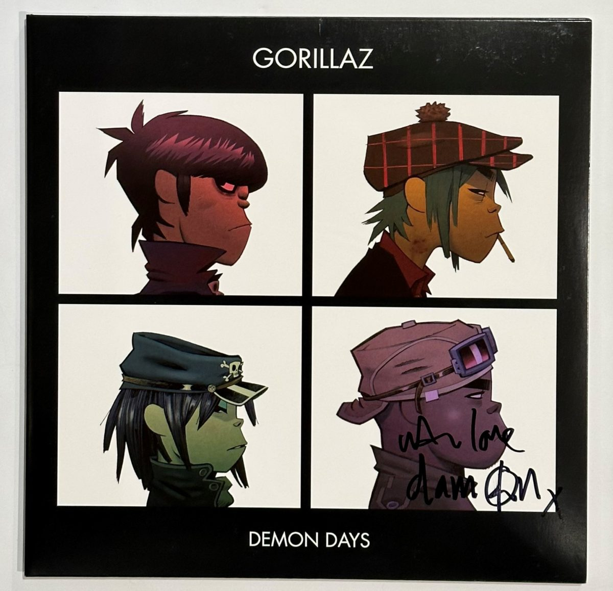
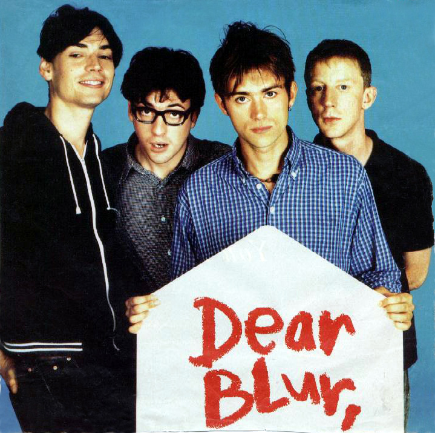

DAMON ALBARN
Músico, Compositor y Visionario Transmedia
PERFIL Y DATOS CLAVE
Edad: 57 años
Ocupación: Músico, Cantautor, Compositor, Productor.
Proyectos: Líder de Blur; Cocreador y voz de 2-D en Gorillaz.
Géneros: Rock Alternativo, Britpop, Worldbeat, Art Rock.
Cita: *"La búsqueda de la libertad creativa es infinita."

MOTIVACIONES
- La libertad creativa y la necesidad de reinventarse constantemente.
- La experimentación sonora y la fusión de géneros (World Music, Hip Hop, Ópera).
- La colaboración con una amplia diversidad de artistas internacionales.
- Criticar la superficialidad de la cultura pop a través de personajes (Gorillaz).
FRUSTRACIONES
- La rigidez y las expectativas impuestas por el éxito pasado (Blur).
- El agotamiento creativo y la dificultad para escribir letras personales.
- El enfoque lineal y poco artístico de la **industria musical tradicional.
Gorillaz
- Gorillaz es una banda virtual británica creada en 1998 por Damon Albarn y Jamie Hewlett. La banda está compuesta por cuatro miembros ficticios: 2-D, Noodle, Murdoc Niccals y Russel Hobbs. La mayoría de sus canciones junto con todo su universo ficticio, se presentan a través de vídeos musicales animados, de animación tradicional y animación por computadora, entrevistas y pequeños cortos animados. En la realidad, Albarn es el único miembro permanente de la banda. El productor y ejecutivo Remi Kabaka Jr. empezaría a colaborar con el grupo en 2016 después de proveer por varios años la voz de Russel Hobbs y sería nombrado miembro oficial junto a Albarn y Hewlett en 2019 en el documental de Gorillaz, Gorillaz: Reject False Icons.
- Utilizar la **melancolía y tristeza** como catalizadores para crear música profunda. 
Blur
- Blur es una banda de rock británica formada en Londres en 1988. Está formada por el cantante Damon Albarn, el guitarrista Graham Coxon, el bajista Alex James y el baterista Dave Rowntree. Su álbum debut, Leisure (1991), incorporó los sonidos del madchester y el shoegazing. Tras un cambio estilístico influenciado por bandas pop británicas como The Kinks, The Beatles y XTC, Blur lanzó Modern Life Is Rubbish (1993), Parklife (1994) y The Great Escape (1995). Como resultado, la banda ayudó a popularizar el género del britpop y logró una gran fama en el Reino Unido, con la ayuda de una batalla mediática y en las listas de éxitos con la banda rival Oasis en 1995 denominada «La batalla del britpop». 